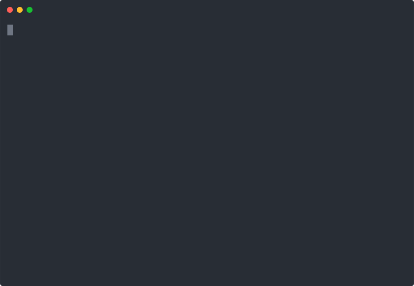
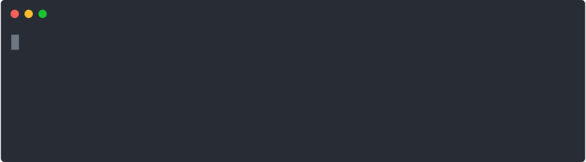
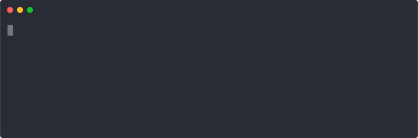

codegrip provides RStudio addins and Emacs commands for reshaping R code and navigating across syntactic constructs.
Reshaping
addin_reshape lets you cycle between different shapes of function calls. For instance, reshaping transforms code from wide to long shape and vice versa.

Note that for function definitions, addin_reshape cycles through two different long shapes. The traditional L form uses more horizontal space whereas the flat form uses less horizontal space and the arguments are always aligned at double indent:

Navigating
There are currently two motions implemented in codegrip: outwards and inwards.
addin_move_insidefinds the first opening delimiter ((,[, or{) after your cursor and steps inside it.addin_move_outsidefinds the first opening delimiter before your cursor and steps outside it.

These motions are handy for quick navigation across to quickly jump from a function argument to the corresponding function call. From there, you can reshape the whole call using addin_reshape.
Installation
The package is not yet on CRAN but you can install the development version from GitHub with:
# install.packages("devtools")
devtools::install_github("lionel-/codegrip")Roadmap
Forward and backward motions.
Adding arguments to a function call using forward backward motions.
Reshaping of repeated calls like
foo(...)(...). This will help reshaping data.table pipelines, e.g.DT[...][...].Reshaping of
{expressions.Reshaping of pipelines of binary operations, including pipes.
Columnar formatting of
tibble::tribble()calls.Selection of syntactic constructs, such as function arguments.